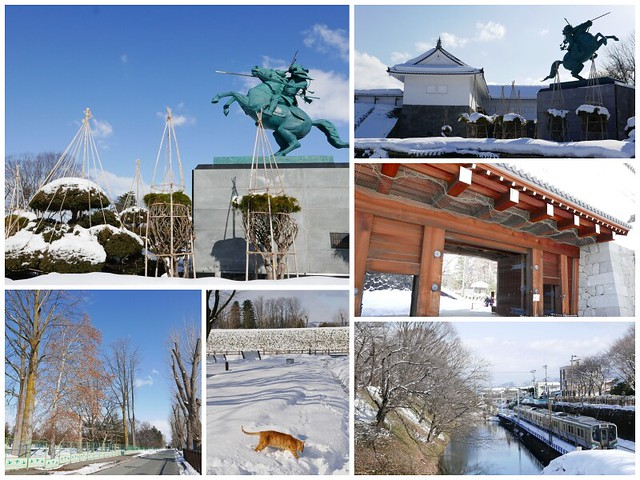

霞城公園
かじょう\Kajo-machi
霞城公園

城堡自 1986 年起一直在翻新，遺址的一部分已完成重建，儘管沒有大型的重建古城可供參觀，但公園各處已豎立起許多地基。東大門等重點構造已得到重建，而護城河和防護外牆也得以保留，至今也仍有考古發掘在繼續。
霞城公園特色
千株吉野櫻
 霞城公園的櫻花樹大約有1200株是吉野櫻，已有一百年的樹齡。沿著公園一整排都是櫻花樹。一邊欣賞櫻花，慢慢繞行一圈，至少也會花上一個小時的時間。
小徑上沒有任何喧嘩聲，只有鳥鳴花香，抬頭是滿天櫻花海。
霞城公園的櫻花樹大約有1200株是吉野櫻，已有一百年的樹齡。沿著公園一整排都是櫻花樹。一邊欣賞櫻花，慢慢繞行一圈，至少也會花上一個小時的時間。
小徑上沒有任何喧嘩聲，只有鳥鳴花香，抬頭是滿天櫻花海。
桃紅枝垂櫻
 公園內除了有櫻花外，還有粉紅爛漫的吉野櫻，園內也有幾株壯觀的枝垂櫻，在欣賞櫻花的同時也可以欣賞吉野櫻，真是不可不去的好地方。
公園內除了有櫻花外，還有粉紅爛漫的吉野櫻，園內也有幾株壯觀的枝垂櫻，在欣賞櫻花的同時也可以欣賞吉野櫻，真是不可不去的好地方。
夜櫻點燈
 而在櫻花季時，霞城公園也會在晚上18:00~22:00點燈。夜晚的櫻花小徑更有一種超現實的氛圍，與早上的櫻花風景完全不同，如果看膩了單調的櫻花風景的話，
不仿可以試試這有趣的景色，在那美麗的櫻花海中夾雜了一絲絲神秘感，也許你會喜歡上這不一樣的風景。
而在櫻花季時，霞城公園也會在晚上18:00~22:00點燈。夜晚的櫻花小徑更有一種超現實的氛圍，與早上的櫻花風景完全不同，如果看膩了單調的櫻花風景的話，
不仿可以試試這有趣的景色，在那美麗的櫻花海中夾雜了一絲絲神秘感，也許你會喜歡上這不一樣的風景。
總結
 霞城公園山形縣民最喜愛賞櫻地點。不想賞櫻只賞到人頭，或是想盡情拍照攝影，亦或想靜靜感受大自然的春天氣息，非常建議選擇平日來此處，霞城公園真的可以滿足這樣的需求。 另外，如果喜歡賞櫻的熱鬧氣氛，橫跨櫻花季的週末兩日，也會在園內舉辦一些活動。有限量免費提供抹茶、蕎麥麵，或是請山形舞子遊園，還有一些小吃攤販喔！ 而霞城公園的入口處城牆與護城河旁，正好有電車軌道，時間剛好的話，也能看到城牆、河水與電車的難得景象喔！